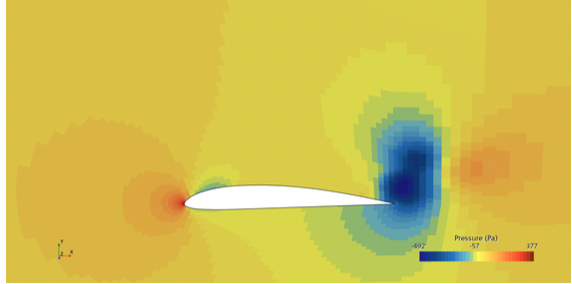
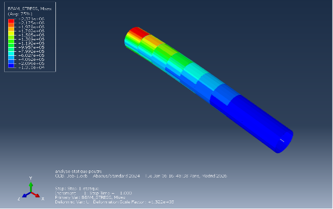

Analyse aérodynamique et structurale d’une aile de planeur
Une étude couplée allant du dimensionnement analytique de l’aile à la vérification CFD et par éléments finis, réalisée en collaboration avec Étienne Roy.
Aile de planeur · profil Clark Y
Ligne portante de Prandtl · STAR-CCM+
Analyse par éléments finis Abaqus
Modélisation, simulation et rapport
Dimensionner une aile crédible aérodynamiquement et défendable structurellement.
Le projet relie plusieurs niveaux de fidélité. Les outils analytiques établissent la géométrie et les chargements de premier ordre, la CFD vérifie le champ d’écoulement et les coefficients aérodynamiques, puis l’analyse par éléments finis évalue la réponse structurelle sous les cas de charge obtenus.
Un processus de vérification progressif.
- Sélectionner le profil et définir la géométrie de référence et les conditions de vol.
- Utiliser la théorie de la ligne portante de Prandtl pour le chargement spanwise et les performances de premier ordre.
- Construire un cas STAR-CCM+ pour étudier la pression et le champ d’écoulement.
- Transférer un chargement représentatif vers un modèle structural Abaqus.
- Comparer les résultats entre méthodes et documenter les limites des modèles.
Analyse numérique de l’écoulement autour du profil sélectionné.

L’étape CFD fournit une vision plus détaillée de la distribution de pression et du sillage que le modèle analytique, tout en restant dépendante du maillage, du modèle de turbulence et des conditions aux limites.
Vérification de la structure de l’aile par éléments finis.

Le modèle éléments finis vérifie la distribution des contraintes et les déplacements sous un chargement aérodynamique représentatif. Les résultats sont interprétés en tenant compte de l’idéalisation des conditions aux limites et des hypothèses matériau.